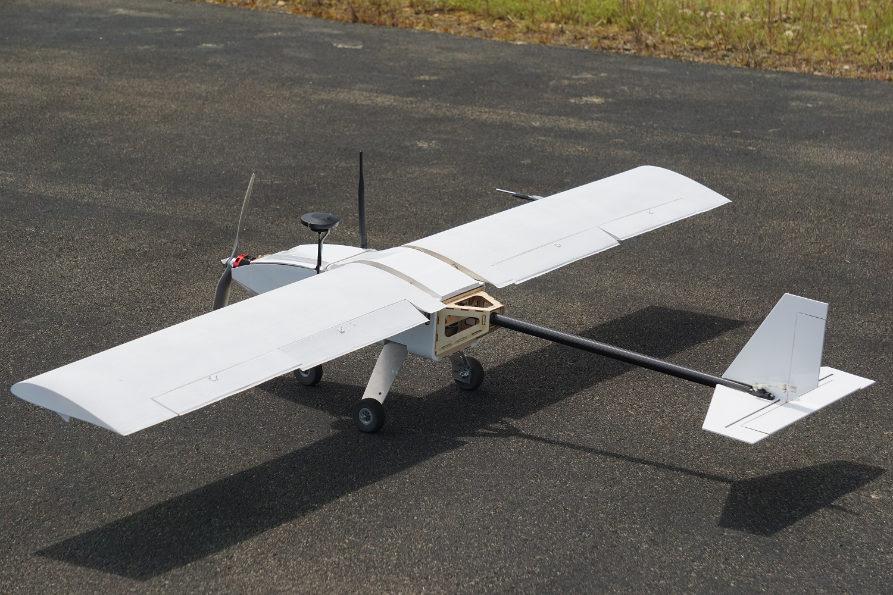

Portfolio
In Progress
Aerial Robotics Club Airframe
I am the principal designer of the new primary airframe for the Aerial Robotics Club at NC State. Built out of woods and composite materials, the 8ft, 25lb aircraft will be gas powered with long-range endurance. Design considerations are also being made to allow for future VTOL capability. This aircraft will compete in the 2018 AUVSI SUAS Competition, with plans to also attend the Medical Express Challenge.
Tentative Specifications:
- Configuration: Twin-tailboom Pusher
- Wingspan: 96in
- Weight (RC Configuration): 15lb
- MTOW: 25lb
- Endurance: > 1h
- Powerplant: Desert Aircraft DA-35 Gas Engine
- Autopilot: Pixhawk2 w/ Modified ArduPlane Firmware
- Onboard Systems: NVIDIA Jetson TX2, Sony a6000, Long-Range 900MHz and 5.8GHz Radios, Mission Specific Hardware
Complete
Senior Design Project
The Fall 2017 Senior Design project is sponsored by Denso Corporation. The objective of the project is to design a machine that automatically seperates the copper coil from a plastic core on defective ignition coils. Ignition Coil
Exploded view of the cutting block subassembly. FEA stress distribution of cutting blade at maximum exerted force.NASA Digital Twin UAS
During the spring and summer 2017 semesters, I worked in a team of three undergraduates at NC State to design, construct, and fly an experimental UAV. I was the lead designer for the airframe and was also responsible for autopilot integration. Additionally, I collated and synchronized millions of data points from separate flight data recorders in MATLAB to produce relevant plots. The project was contracted by researchers at NASA Langley to supply flight data for real-time structural models for use onboard the next generation of military and commercial aircraft. The airframe has completed numerous flight hours with a 100% success rate.
CAD mock-up of the aircraft design. Fiberglass wing layup and bagging.  Finished aircraft on runway.I led the construction of a new ground station trailer for the Aerial Robotics Club. We purchased an empty 16' enclosed trailer in early 2016. The trailer was upgraded with 22 feet of desk space and overhead shelving, full electrical hookups, a wired gigabit network, thermal insulation, LED lighting, and all necessary antennas.
I am currently leading a subteam to design a new camera gimbal for the Fenrir 3 unmanned aerial system being built by the NC State Aerial Robotics Club. The new design should improve on the last version by reducing overall width to accommodate a wiring harness on each side and balancing a different camera setup. The gimbal is gyroscopically controlled to stay oriented directly at the ground for target acquisition.

3D Printed interlocking ring adapter for the SVS-Vistek camera.

For my final project in Graphic Communications I recreated a transducer component from a medical lab device in SolidWorks. Measurements were taken to a 0.1mm tolerance.